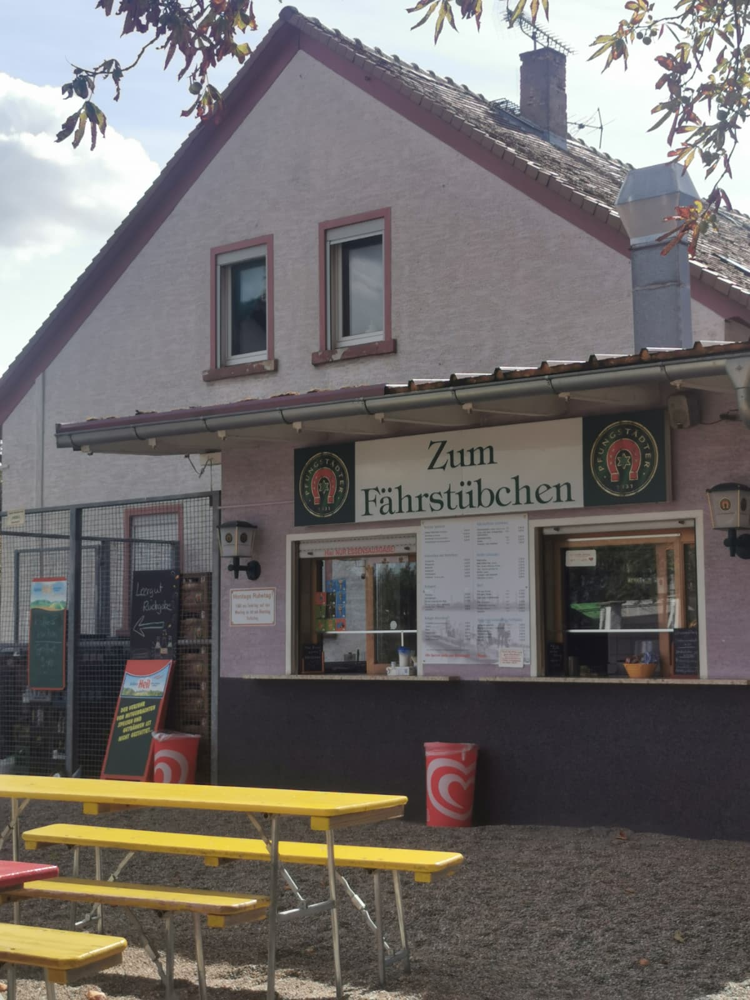

Hausstrecke
Unsere Hausstrecke führt durch das schöne Ried und ist mit ungefähr 140 km genau die richtige Tour für eine Wochenendausfahrt. Ein beliebter Zwischenstopp ist am Fährstübchen am Kornsand. Es ist ein Treffpunkt für Motorrad- und Fahrradfahrer mit leckerem Kuchen und Würstchen zur Stärkung. Wenn man möchte, kann man von dort mit der Fähre über den Rhein übersetzen und die Tour auf der rheinland-pfälzischen Seite fortfahren.